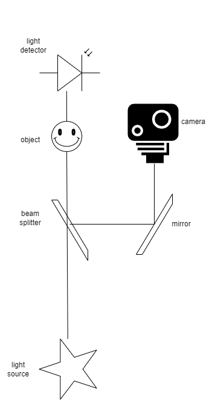

Il ghost imaging è un modo non convenzionale per formare immagini di oggetti senza mai farne una foto.
Persino nel ghost imaging, l'oggetto di cui se ne vuole fare un'immagine deve essere illuminato, ma il sensore della macchina fotografica raccoglie la luce che illuminerà l'oggetto prima che questa colpisca l'oggetto. In pratica la macchina fotografica è spostata lateralmente in modo tale che l'oggetto non risulta più inquadrato. Quindi si usa un beam splitter per suddividere il fascio di luce predisposto per illuminare l'oggetto in due metà prima che incontri l'oggetto: una metà procede in linea retta fino all'oggetto come sarebbe accaduto se nessun beam splitter fosse stato interposto, l'altra metà viene deviata, come se avesse incontrato uno specchio, e procede secondo un'altra direzione lungo cui viene disposto l'obiettivo della macchina fotografica che quindi non inquadra più l'oggetto. Questa configurazione dovrebbe quindi fornire un'immagine dello sfondo della scena senza l'oggetto, tuttavia, con un ingegnoso accorgimento i cui dettagli sono forniti a breve, nell'immagine compare in sembianze evanescenti ed effimere l'oggetto la cui presenza inattesa ha un non so che di spettrale, cosa che insieme alla sua flebile consistenza ha indotto gli scienziati a usare il termine suggestivo "fantasma" per etichettare la tecnica. Una tale tecnica trova utili applicazioni pratiche ogni volta che l'oggetto non può essere inquadrato dalla macchina fotografica per i più svariati motivi o quando l'oggetto non può essere illuminato, senza che si danneggi, da luce di lunghezza d'onda a cui il sensore della macchina fotografica è sensibile: in quest'ultimo caso l'appena citata suddivisione del fascio di luce è realizzata su base frequenziale, inviando solo certe componenti frequenziali della luce verso l'oggetto, quelle innocue, e la parte rimanente verso la macchina fotografica. Una caratteristica limitante della tecnica del ghost imaging consiste nel fatto che si tratta di una tecnica multi-scatto, e per tanto l'oggetto non può essere in movimento per un periodo di tempo sufficientemente lungo in modo da consentire di scattare un considerevole numero di foto quante sono necessarie per otterene un'immagine abbastanza nitida.
L'accorgimento ingegnoso, come promesso di svelare, è tanto semplice quanto non scontato: dove ci si aspetterebbe di trovare l'apparecchio fotografico in un sistema di imaging convenzionale, cioè dopo l'oggetto, viene posto invece un banale sensore di luce tramite cui la luce dall'oggetto viene raccolta. Il sensore di luce non è come il sensore di un apparecchio fotografico che è fatto da una miriade di piccolissimi sensori di luce, detti pixel, ciascuno dei quali si prende cura di guardare una così piccola regione dell'intera inquadratura, distinta da quelle degli altri, allo scopo di ricostruire insieme agli altri l'intera imamgine. Così il sensore di luce posto dietro l'oggetto è come un apparecchio fotografico ad un solo pixel che può vedere soltanto chiaro o scuro, ma nessun dettaglio dell'oggetto per quanto possano essere evidenti. A questo punto, l'apparecchio fotografico scatta una grande quantità di foto che poi vengono sovrapposte una sull'altra come in un'unica foto a lunga esposizione, ma non tutte le foto fatte vengono tenute, perché così facendo l'immagine finale sarebbe quella dello sfondo della scena, come è naturale che accada dato che l'oggetto non è mai stato inquadrato. Le foto fatte quando il sensore di luce dietro l'oggetto ha visto buio vengono scartate, solo quelle quando il sensore ha visto luce vengono accumulate per produrre l'immagine risultante. Da questa spiegazione traspare la semplicità dalle tecnica ma non è ancora chiaro perché funziona.
Per svelare il segreto del suo funzionamento è più semplice esaminare la versione quantistica della tecnica di ghost imaging, che fa uso di una speciale luce per l'illuminamento, ma prima di ciò la natura quantistica della luce deve essere interpretata come flusso di fotoni. Per capire questo aspetto vediamolo in opera durante l'imaging convenzionale.
Setup fotografico
Dal basso verso l'alto: la sorgente di luce illumina l'oggetto, la macchina fotografica non inquadra l'oggetto ma solo la sorgente di luce che sta illuminando l'oggetto. Nonostante ciò si ottiene ugualmente un'immagine dell'oggetto, grazie all'informazione raccolta dal sensore di luce dietro l'oggetto.
Spieghiamo come l'imaging convenzionale funziona considerando la luce come un flusso di fotoni e utilizzando come oggetto uno che sia trasmissivo, cioè che abbia regioni trasparenti attraverso le quali alla luce è consentito di passare e regioni opache dove la luce è assorbita e quindi bloccata.
L'animazione aiuterà a seguire il ragionamento.
Col passare del tempo, pensando di rallentare drasticamente lo scorrere del tempo, i fotoni dalla sorgente di luce sono emessi ad una velocità che può essere osservata nell'animazione (normalmente invece vanno alla velocità della luce). Inoltre sono emessi in elevatissime quantità, dipendenti dall'intensità della luce, e così ancora una volta per semplicità di spiegazione supponiamo che l'intensità sia bassissima tanto che solo un fotone alla volta venga emesso.
Nell'animazione i fotoni sono rappresentati come piccole palle che corrono lungo tratti rettilinei a partire dalla sorgente luminosa.
Ogni volta che un fotone incontra l'oggetto in una regione trasparente procede indisturbata fino a raggiungere il sensore in un dato pixel e l'apparecchio fotografico nel processo di formazione della foto ricorda che quel pixel è stato colpito da un fotone (nell'animazione questo ricordo registrato dall'apparecchio fotografico è rappresentato dall'illluminamento del pixel colpito).
D'altra parte, un fotone che incontra l'oggetto in una regione opaca viene distrutto (distruzione rappresentata nell'animazione dalla scomparsa della palla).
Dato che i fotoni escono dalla sorgente di luce scegliendo una direzione che è completamente aleatoria tra tutte le possibilità, col passare del tempo tutte le possibili direzione saranno prese da almeno un fotone, in modo tale che tutti i punti dell'oggetto saranno illuminati. Ne segue che tutti e solo i pixel del sensore a cui capita di essere sul tratto rettilineo passante per la sorgente senza intersecare l'oggetto in una sua regione opaca sono illuminati e quindi presi tutti insieme riproducono la forma dell'oggetto con le sue regioni di trasparenza ed opacità.
Simulazione a bassissima velocità di riproduzione
Qui sono mostrati tre elementi: in basso, la sorgente di luce (rappresentata da una stella); nel centro, ad occupare l'intera inquadratura dell'apparecchio fotografico, c'è un oggetto rettangolare trasmissivo la cui regione di trasparenza è a forma di S reclinata mentre la parte restante è opaca; l'apparecchio fotografico è semplicemente rappresentato dal suo sensore rettangolare dove tutti i suoi pixel sono visibili (si tratta si un sensore molto rudimentale perché ha soltanto 32 pixel! Questo è il motivo per cui il profilo ad S regolare viene visto in foto come avente un contorno spigoloso). L'obiettivo dell'apparecchio fotografico non è mostrato: la sua presenza tra il sensore e l'oggetto è fondamentale perché si possa avere una immagine.
Ora torniamo al ghost imaging quantistico. Come detto la luce in generale è un flusso di fotoni e nella luce speciale usata nel ghost imaging quantistico i fotoni si presentano sempre in coppia e in tale coppia sono correlati (entangled).
Questi fasci di coppie di fotoni entangled sono prodotti facendo passare un fascio di luce laser attraverso un cristallo otticamente non lineare. Un laser è una sorgente di luce che emette luce fatta di fotoni di uguale frequenza; quando un tale flusso interagisce con il detto cristallo, ciascun fotone fornito dal laser si decompone in due altri fotoni che sono correlati, cioè per principi di conservazione della natura hanno frequenze più basse, ma frequenza somma esattamente identica a quella del fotone che li ha prodotti. Analogamente per la loro quantità di moto: hanno entrambi differenti direzioni di propagazione da quella del fotone che li ha prodotti ma tali che la direzione di propagazione complessiva della coppia vi si allinei ad essa, così che i due fotoni proseguono lungo direzioni orientate simmetricamente rispetto alla direzione tenuta dal fotone che li ha prodotti in un piano che li contiene. Dal cristallo quindi i fotoni entangled di ogni coppia vengono fuori non allineati tra loro, ma secondo direzioni che abbracciano due diversi intervalli non sovraposti: di questi due intervalli uno è scelto per posizionare l'oggetto insieme al sensore di luce dietro di esso e l'altro è dove viene disposto l'apparecchio fotografico. Ora il sensore di luce usato dopo l'oggetto può effettivamente essere un semplice rilevatore di luce, senza nemmeno la capacità di misurare l'intensità di luce, ma solo di rilevare la presenza o assenza di luce.
A questo punto l'apparecchio fotografico comincia a scattare foto, idealmente una per ogni coppia di fotoni generati: e ancora idealmente ogni foto è totalmente nera con eccezione di un solo pixel, quel pixel che è stato colpito da uno dei fotoni entangled della coppia di fotoni. L'altro fotone corrispondente avrà avuto uno dei suoi possibili destini: o è passato attraverso l'oggetto e ha raggiunto il rivelatore di luce dietro l'oggetto o è stato assorbito dall'oggetto e non ha mai raggiunto il rivelatore di luce. Alla fine dato che nel tempo i fotoni che raggiungono l'apparecchio fotografico prendono tutte le possibili direzioni e colpiscono tutti i pixel dell'apparecchio fotografico, risulta che sovrapponendo tutte le foto fatte si ottiene un'immagine completamente bianca. D'altra parte, se invece solo un sottinsieme di foto viene sovrapposto, in particolar modo solo quelle corrispondenti a quei fotoni che hanno avuto il loro fotone correlato in grado di raggiungere il rivelatore di luce, dato che quei fotoni hanno direzioni di propagazione simmetriche a quelle dei fotoni che sono passati attraverso l'oggetto, la detta foto finale ha illuminati tutti e solo i pixel che riproducono la regione di trasparenza dell'oggetto. Così il rivelatore di luce è in pratica usato come sorgente di informazione attraverso cui accumulare le foto utili e scartare quelle sbagliate.
Simulazione a bassissima velocità di riproduzione
In basso, la sorgente di luce (deve essere un laser in questa versione quantistica); immediatamente sopra c'è un cristallo non lineare; nel centro a sinistra, c'è un oggetto rettangolare trasmissivo, mentre sulla destra dovrebbe esserci l'obiettivo dell'apparecchio fotografico (non rappresentato) fondamentale per avere una foto analogamente al caso dell'imaging convenzionale, e la sua messa a fuoco deve essere regolata come se l'oggetto fosse sulla destra invece che sulla sinistra; sopra tutto, sulla sinistra, c'è un semplice rilevatore di luce senza risoluzione spaziale, mentre sulla destra il sensore dell'apparecchio fotografico. Il primo notifica a quest'ultimo di tenere una foto, che altrimenti sarebbe scartata.
Anche se il funzionamento interno del ghost imaging è stato spiegato solo per la versione quantistica, che comporta l'uso di un laser come sorgente di luce per illuminare l'oggetto, la stessa strategia può essere applicata usando luce normale.
Il cambiamento principale necessario per il suo funzionamento consiste nella sostituzione dell'azione di innesco operata dal rilevatore di luce sul sensore dell'appareccho fotografico con il calcolo della correlazione tra le intensità di luce catturata dal sensore dell'apparecchio fotografico e dal rilevatore di luce in corrispondenza di ogni foto scattata e scartando quelle foto per le quali la correlazione calcolata è bassa.